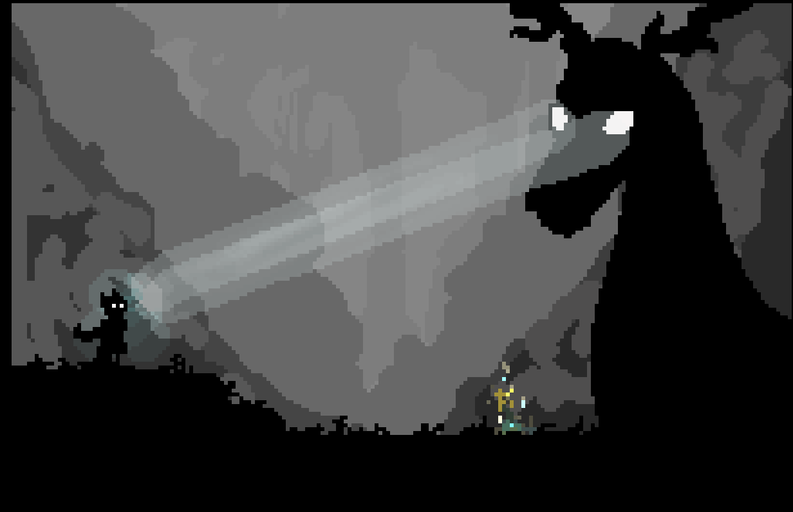
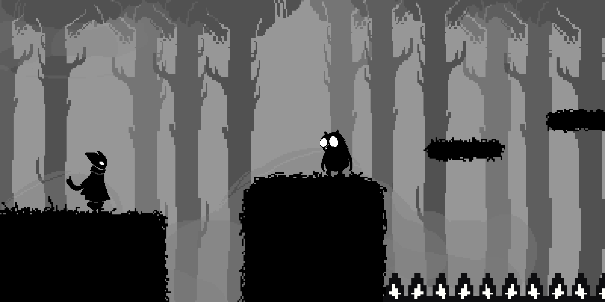

SOBRE O JOGO

VOCÊ ACORDOU.
MAS ESTE NÃO É MAIS
O SEU MUNDO
Depois de adormecer após um dia aparentemente normal, você acorda em um lugar completamente diferente.
O mundo repleto de cores, pessoas e vidas... havia desaparecido.
AGORA, TUDO ESTÁ
SEM COR
O lugar que você conhecia foi completamente transformado. O mundo perdeu suas cores e algo parece estar errado.

Enfrente-as para sair de seu tormento e finalmente voltar ao seu mundo.
A JORNADA DO PROTAGONISTA
O protagonista acorda assustado em um mundo aterrorizante, desprovido de cores e repleto de monstros, após adormecer no tronco de uma árvore velha e pútrida. O evento inicial se desdobra quando ele se depara com um ser que o guia até uma flor especial; ao colhê-la, uma das cores é magicamente devolvida ao cenário, revelando o objetivo principal do jogador, que consiste em encontrar as demais flores espalhadas pelo mapa, enfrentar inimigos corruptos e superar os obstáculos do ambiente. Ao longo dessa jornada, a verdadeira motivação do personagem é descobrir uma maneira de escapar desse universo hostil, transformando sua busca pela sobrevivência em um profundo processo de autoconhecimento e aceitação.
DINÂMICA DE JOGO
Nosso jogo é uma plataforma 2D side-scrolling com movimentação rápida e fluida. Você poderá correr, pular, realizar um pulo duplo, atacar com sua arma e utilizar o dash para superar obstáculos e perigos. Ao longo da jornada, encontrará flores e outros itens espalhados pelo caminho. Mais do que simples colecionáveis, eles revelam fragmentos desse mundo e incentivam a exploração. A aventura evolui gradualmente: cada desafio apresenta novas mecânicas e inimigos mais fortes, enquanto os checkpoints permitem que você continue avançando sem medo de arriscar.
